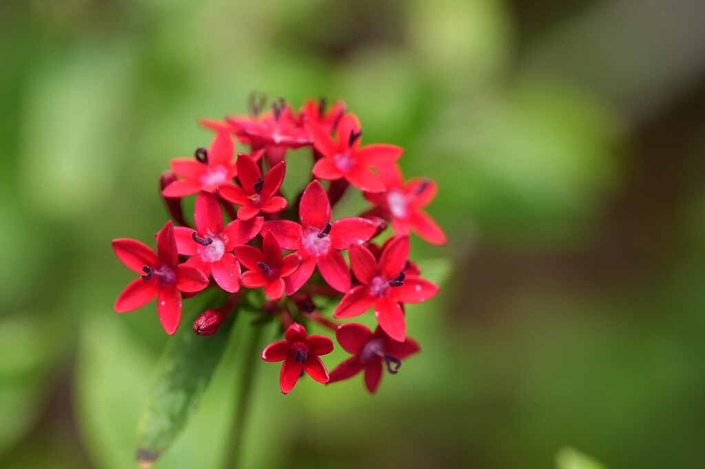

- The genus name Pentas is Greek for five — each flower has exactly five petals, five sepals, and five stamens, without exception.
- Member of the Rubiaceae family — the same family as coffee, Wild Coffee, and Firebush elsewhere in the park. A distant relative of the plant that produces your morning cup.
- In most of the country these are sold and grown as annuals. In Manatee County they behave as perennials, blooming continuously through the year with no sign of stopping.
- The pentas here were put in by high school student volunteers in 2025 and have been regularly weeded and watered by the same team ever since. They frame the paver walkway toward the office.
Non-native. Native to grasslands and forest edges of East Africa and Yemen. Member of the Rubiaceae family — the same family as coffee, Wild Coffee, Firebush, and Jungle Flame also in the park collection.
- Pentas is sold in most of the country as a summer annual that dies when temperatures drop. In Manatee County it does not get that memo — the plants outside the office were put in by high school volunteers in 2025 and have been blooming continuously since, regularly weeded and watered by the same student team that planted them. They frame the paver walkway toward the Peace Lily and Staghorn Fern.
- The flower structure is precisely engineered for pollinators. Each tubular bloom is shallow enough to be accessible to butterflies with shorter tongues — species that cannot reach the nectar in deeper flowers. This broadens the range of butterfly visitors considerably.
- In its native East Africa, pentas grows in grassland and forest edges where it is visited by sunbirds — the ecological equivalent of hummingbirds in the Americas. The same relationship plays out here, with Ruby-throated Hummingbirds drawn especially to red-flowered selections.
- One note that matters particularly to the many butterfly enthusiasts who visit the park: not all pentas cultivars are equal. Newer compact dwarf varieties bred for tidy form are frequently poor nectar producers — essentially ornamental as far as butterflies are concerned. Older, taller-growing varieties are the ones with genuine pollinator value.
- The difference in butterfly activity between a good nectar cultivar and a poor one is not subtle, and it is worth asking at the nursery before buying.
One of the more productive butterfly nectar plants available for Florida gardens. Butterflies, bees, and hummingbirds all use it, and a plant in full bloom typically has multiple species visiting at once.
Hummingbirds show a preference for red-flowered selections and are documented visiting pentas before other garden flowers when multiple options are available. Ruby-throated Hummingbirds pass through the Tampa Bay area in fall migration and pentas is a reliable refueling stop.
A note for the many butterfly enthusiasts who visit the park: not all pentas are equal. Newer compact cultivars bred for tidy form are frequently poor nectar producers — essentially ornamental as far as butterflies are concerned. If you are planting for pollinators, seek out the older, taller-growing varieties.
The difference in butterfly activity between a good nectar cultivar and a poor one is not subtle.
Dense 3-inch clusters of star-shaped tubular flowers at branch tips, each with exactly five petals. Available in red, pink, lavender, and white; red selections are most attractive to hummingbirds. Blooms nearly year-round in Central and South Florida.
Small inconspicuous capsules. Propagates readily from stem cuttings; also from seed.
Lance-shaped, covered with fine hairs on both surfaces, with prominent veins on the undersides. Medium green. Leaves are the source of the species name lanceolata — lance-leaved.
Upright evergreen shrub or tall perennial, 2 to 4 feet tall, moderately fast growing.
The five-pointed star shape of each individual flower is distinctive up close — count the petals and you will always find five. The clustered flower heads at branch tips are visible from a distance. Fine leaf hairs give the foliage a slightly soft texture.
This isn't a food plant, but it's safe to handle — no significant toxicity is documented for people, dogs, or cats.


- © Rhonda Olschefskie (CC-BY-NC), via iNaturalist
- © Randall Carter (CC-BY-NC), via iNaturalist
- © Franky McArthur (CC-BY-NC), via iNaturalist
- © Ruby Meador (CC-BY-NC), via iNaturalist